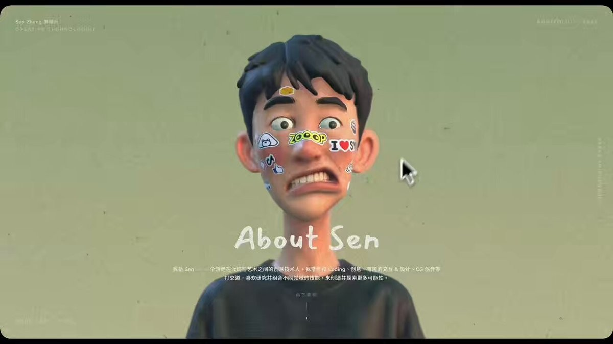

X｜Sen Zh：用 Vibe Coding 把履歷變成 3D 互動個人網站
來源是 Sen Zh（@SenZh4）的 X 影片貼文，主題是「Vibe Coding 能把簡歷玩出什麼花樣」。貼文展示一個近期 vibe 出來的個人網站：用 AI 把自己變成 3D 虛擬小人，並做了一個讓小白也能快速生成的互動平台示範。

一句話摘要
這是一個「履歷不再只是 PDF」的示範：把個人介紹、作品集、視覺人格與互動體驗整合成 3D 網站，用 Vibe Coding 快速生成可探索的個人品牌入口。
原文內容
X 可見文字：
> Vibe Coding 能把简历玩出什么花样？？
>
> 😄分享一个最近Vibe的个人网站，用AI把自己变成一个3D虚拟小人，还Vibe了一个小白也能快速生成的平台。#vibecoding #3d互动 #网页设计
公開資料顯示，該貼文於 2026-07-23 發布，影片長度約 2 分 38 秒。抓取時可見約 9.7 萬瀏覽、854 讚、74 轉貼、34 回覆、785 收藏。
影片抽幀觀察
影片抽幀顯示的是一個互動式個人履歷／作品集網站：
- 開頭像是穿過一組 3D 草叢或遮罩，進入個人網站主場景。
- 畫面中有大型 3D 人臉或 3D 頭像，臉上帶有貼紙與裝飾元素。
- 右側或背景有多張作品卡片、視覺設計卡與互動式版面。
- 可見字幕：「于是我决定借助AI生成3D模型」、「脸上贴满属于个人的标签」、「整体我觉得效果还是不错的」。
- 後段畫面出現類似個人作品／學術貢獻頁，包含「科学贡献」「狭义相对论」「广义相对论」等卡片式內容。
此影片更像是「個人品牌互動網站 demo」，不是單純模板頁；重點在於把個人的履歷、作品與性格標籤轉成可玩的 3D 空間。
技術脈絡查核
Brave 搜尋沒有找到與該 X 貼文標題完全匹配的公開平台 URL，因此「小白也能快速生成的平台」目前只能視為作者示範／作者觀察，不能確認已有可公開註冊的產品頁。
但它背後的技術方向有可靠脈絡：
- Vibe coding：IBM 對此概念的整理引用 Andrej Karpathy 的說法，核心是用自然語言與 AI 工具描述意圖、快速生成與迭代程式，而不是手寫每一行程式碼。
- Three.js：官方網站與 GitHub 說明它是 JavaScript 3D library，可用於瀏覽器中的 WebGL / WebGPU 3D 場景。
- Blender：官方文件確認 Blender 是免費開源的 3D creation suite，可作為 3D 模型、角色、場景與動畫資產來源。
- model-viewer：Google 的 model-viewer / web.dev 文件說明，可用 web component 在網頁中宣告式嵌入互動 3D 模型。
因此，貼文雖未揭露實際技術棧，但「AI 生成 3D 形象 + WebGL/Three.js 類網頁互動 + 個人履歷內容」是現有工具鏈可以合理支撐的方向。
對 AI 學習雷達的意義
這則值得歸檔，因為它把 Vibe Coding 從「做一個工具頁」推進到「做一個有記憶點的個人入口」。對內容創作者、講師、顧問或學生來說，未來履歷可能不只是列工作經歷，而是：
- 用 3D avatar 建立第一印象。
- 用互動卡片展示作品、能力與專案。
- 用視覺標籤呈現個人風格與定位。
- 用可探索場景取代傳統線性履歷。
- 把作品集、簡報、社群名片與個人網站整合在同一個體驗裡。
可轉成課堂練習的方式
- 讓學生準備一份個人履歷或作品集文字。
- 用 AI 先產出網站資訊架構：首頁、能力、作品、故事、聯絡方式。
- 產生 3D avatar 概念或使用現成模型／貼紙元素。
- 用 Three.js / model-viewer / WebGL 模板做互動展示。
- 加入「人格標籤」與作品卡片，讓履歷變成可探索的敘事空間。
- 最後做可用性檢查：手機可讀性、載入速度、替代文字、隱私資料、履歷資訊是否過度外露。
實務風險與提醒
- 影片是 demo，不能直接推定平台已公開、可穩定使用或可導出完整程式碼。
- 3D 網站可能帶來載入速度、手機相容、SEO、無障礙與維護成本問題；重要資訊仍要有文字版備援。
- 3D avatar 涉及肖像權、個資與身份識別；公開履歷不要放過度敏感的個人資料。
- 如果用 AI 生成個人形象，要確認素材授權、模型來源與對外使用條款。
- Vibe Coding 適合快速原型，但履歷網站若要正式求職或商務使用，仍需要人工檢查程式碼、資安與內容正確性。